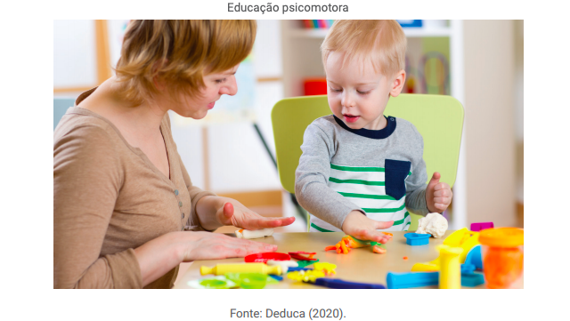
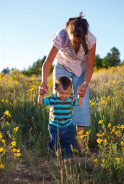

Psicomotricidade
Unidade 1 | Aula 4

Disciplina | Psicomotricidade

Você aprenderá acerca das formas de ação, variações de atuações profissionais e definições no âmbito da Psicomotricidade.

educação psicomotora, reeducação psicomotora, alterações psicomotoras.
A partir das questões psicomotoras, será possível pensar em uma atuação no âmbito da Psicomotricidade. A atuação sob essa perspectiva envolve a prática que envolve tanto o acompanhamento do desenvolvimento humano, quanto aspectos que por conta de algum desvio do trajeto esperado, necessite algum tipo de intervenção nessas áreas.
A educação psicomotora é indispensável e abrange todas as aprendizagens da criança, seja individual ou coletivamente, pois ela permite melhor percepção do corpo, melhor domínio dos movimentos e melhor expressão corporal.
A educação psicomotora facilitará o desenvolvimento de
uma noção corporal e espacial bem precisas.
A educação psicomotora envolve exercícios de análise, lógica, relações entre números e pode se iniciar na escola maternal, de forma individual e/ou coletiva. Quando uma criança pede algum objeto, no lugar de se deslocar até ele, pegar o objeto solicitado e entregar na mão da criança, é importante ensinar à criança como fazer isso sozinha.
Perceba a diferença das duas ações: as “lições” de psicomotricidade serão centradas principalmente no agir, em atividades repetidas de várias formas com diversos materiais. Essa tarefa deve ser primordialmente trabalhada pelos pais, em casa, os quais serão os primeiros educadores da criança.
Depois a escola assumirá, também, a tarefa de educá-la, iniciada com as professoras do maternal e continuado nas séries subsequentes, intensificada pelo professor de Educação Física que disporá de recursos e espaços para a educação psicomotora da criança.
A reeducação psicomotora é parte da retomada do aprendizado de alguma lacuna detectada no desenvolvimento psicomotor e necessita ser iniciada o mais precocemente possível.
A reeducação evita que a criança assimile esquemas motores errados; pois, se isso acontece, ela deverá reconstruí-los. Tem uma implicação significativa sobre os problemas afetivos: quanto mais o tempo passa, mais a criança sente-se bloqueada, reiterando um tipo de reação.
A reeducação motora necessita começar entre 18 a 24 meses para crianças com grandes atrasos ou déficits motores, bem como com bloqueios afetivos. Para aquelas com problemas de esquema corporal e estruturação espacial, deve ser iniciada aos cinco anos.
Algumas dificuldades motoras e casos de instabilidade psicomotora podem já ser trabalhadas aos quatro anos. Porém, de modo geral, a idade de seis anos é a mais comum para as reeducações, já que nessa faixa etária, os professores conseguem identificar com mais segurança as defi ciências da criança em relação à organização espacial ou temporal, à lentidão no trabalho, à falta de concentração, entre outros aspectos.
A qualidade da relação entre a criança e o reeducador é fundamental para o desenvolvimento bem-sucedido de uma intervenção. Assim, durante as sessões, destacam-se algumas características de organização:
sessões:
devem ser, em sua maioria, individuais devido à importância do relacionamento com o profissional. Com o tempo, elas podem ser em grupos, para realizar exercícios que não seriam possíveis em trabalhos individuais;
local:
deve ser alegre, colorido e amplo para favorecer o movimento proposto pelos exercícios psicomotores. É importante destinar um lugar para exercícios sentados (mesas e cadeiras) e ter um tapete emborrachado para exercícios no chão;
duração da sessão:
deverá ser entre 30 e 45 cinco minutos.
A frequência ideal é duas vezes por semana, para que a criança se mantenha ativa e relembre com facilidade o que foi trabalhado na sessão anterior;
número de sessões:
varia de acordo com a criança e a natureza da perturbação. Exemplo, quando a criança tem dificuldade com a memória, ou quando o relacionamento interpessoal é difícil, o número de sessões deverá ser maior;
organização interna de uma sessão:
deve pressupor que o momento seja de felicidade e liberdade para a criança.
Os exercícios motores devem ser variados, sem intervalos, alternados com exercícios de concentração. A criança precisa escolher seu jogo ou material entre os separados pelo reeducador para aquela sessão. Se for o caso, alternar momentos de conversa com trabalho físico;
exercícios:
é importante que toda sessão inicie e termine com exercícios já conhecidos para garantir um resultado positivo.
Elas evidenciam problemas os quais repercutem em alterações motoras, no esquema corporal, de estruturação espacial e temporal.
Quanto ao atraso no desenvolvimento motor, a criança apresenta dificuldade de realizar alguma tarefa motora como subir uma escada.
As causas são debilidade intelectual ou problema psicológico, como crianças superprotegidas, nascimento de um irmão, algum bloqueio afetivo.
Na reeducação, deve-se estimular a criança para que ela interaja com o mundo e com as pessoas. Devem ser propostos recursos de jogos motores e sensório-motores sem exigências além do movimento. Quando for estabelecido o contato entre psicomotricista e criança, exigir elementos mais complexos, como gestos do movimento e lateralidade nos mesmos jogos.
Sobre os grandes déficits motores, a criança apresenta hemiplegia. As causas da hemiplegia são relacionadas por problemas gerados durante o nascimento.
Hemiplegia – Um tipo de paralisia cerebral que imobiliza o lado do corpo atingido, deixando o indivíduo muito debilitado.
Na reeducação, deve-se estimulá-la a recuperar o movimento perdido, trabalhando noções de esquema corporal e eixo do corpo para uma estruturação espacial adequada. Devem ser trabalhados exercícios de destreza, coordenação, conhecimento das partes do corpo, lateralidade e jogos de estruturação espacial.
Quanto às perturbações do equilíbrio, a criança cai com frequência, esbarra nos seus companheiros, anda com os pés afastados e corre com o tronco para frente.
As causas podem ser motoras de origem cerebelar, vestibular, sensibilidade proprioceptiva ou psicológica.
Os testes diagnósticos para essas perturbações são o Teste de Romberg e a prova de andar cego.
Teste de Romberg – Exame que permite avaliar a autopercepção da pessoa em relação à posição de suas pernas, do seu corpo de maneira interna (sem olhar).
Na reeducação deve-se possibilitar que a criança perceba a sua falta de equilíbrio e orientar como restabelecê-lo com exercícios de propriocepção e equilíbrio.
Acerca das perturbações de coordenação, a criança não apresenta gestos harmônicos nas atividades de vida diária, como demora para se vestir, recorta com dificuldade.
As causas são perturbações vestibulares ou cerebelares, sensibilidade superficial ou profunda, psicológicas ou afetivas.
Na reeducação, deve-se trabalhar no restauro da confiança para o desempenho de atividades psicomotoras e exercícios de motricidade, de coordenação dinâmica, motricidade delicada e de pré-escrita.
As perturbações na sensibilidade, a criança não é capaz de reproduzir gestos, a não ser na frente do espelho, deixa cair das mãos objetos, atrapalha-se com os seus tornozelos.
As causas são de natureza motora ou neurológica.
Na reeducação, deve-se ensinar a criança a controlar, por meio da visão, o que deve sentir, com exercício de reconhecimento interno e tátil, de tomada de posições, coordenação, equilíbrio, destreza.
Estimulação motora

Fonte: Deduca (2020).
Nas alterações intelectuais, a criança apresenta alteração leve, moderada ou profunda.
As causas são neonatais, alcoolismo na gravidez, patologias que atingiram o cérebro.
Na reeducação deve-se trabalhar a afetividade tanto na sua postura corporal quanto em questões comportamentais, desenvolver atividades psicomotoras como correr, saltar, rolar, além de reconhecimento tátil e auditivo. Devem ser propostos exercícios motores, de memória, de reconhecimento tátil e auditivo.
Nas alterações do esquema corporal, a criança não reconhece as partes do corpo, não situa bem seus membros ao gesticular ou não coordena bem seus movimentos.
As causas são as alterações que não têm base motora ou intelectual apresentam origem afetiva.
Na reeducação deve-se exercícios específicos para cada causa, mas, de maneira geral, devem vir acompanhados de um relacionamento entre a criança e o terapeuta, que permita assumir os problemas afetivos.
Nas alterações da lateralidade, a criança não sabe escolher a mão que tem mais destreza, faz atividades de força com uma mão e de precisão com a outra, lateralidade não homogênea entre pé e mão.
As causas são motoras, neurológicas, psicológicas e sociais, como um canhoto que é forçado a se adaptar ao “mundo para destros”.
Na reeducação deve-se trabalhar reconhecimento de direita-esquerda, direção gráfica, dificuldade de discriminação visual com exercícios de percepção do lado dominante, do eixo simétrico do corpo, de formação de bonecos e de reconhecimento de esquerda-direita.
As alterações da estrutura espacial, a criança percebe bem o espaço à sua volta, mas se orienta com dificuldade; orienta-se bem, mas não com a memória espacial; não tem organização espacial; não assimila a reversibilidade, a transposição e tem dificuldade para compreender relações espaciais.
As causas são má integração do esquema corporal, alterações na lateralidade, falta de manipulações e desordens psicológicas.
Na reeducação deve-se resgatar e ensinar a estrutura espacial. Os recursos são exercícios específicos para cada sintoma que ela apresenta, trabalho com jogos, exercícios escritos, exercícios de reconhecimento e outros.
Nas alterações na orientação espacial, a criança é incapaz de descobrir a ordem e a sucessão dos acontecimentos, não percebe os intervalos, não tem um ritmo regular, não tem noção de horários e não consegue organizar o seu tempo.
As causas são motoras (problema auditivo ou ritmo irregular da respiração), psicomotoras (organização e orientação espaciais) e psicológicas (choque afetivo, falta de rotina ou ambiente inseguro).
Na reeducação deve-se trabalhar a noção espacial com exercícios específicos para cada sintoma, mas, de modo geral, exercícios espaciais incluindo ordem, intervalos, exercícios escritos, entre outros.
Nas alterações no grafismo a criança sabe o que quer escrever, mas a sua execução no plano motor é problemática.
As causas são alterações na coordenação motora, rigidez dos dedos e problemas psicológicos.
Na reeducação deve-se dependendo da causa de alteração no grafismo, trabalhar o desenvolvimento psicomotor e o desenvolvimento do grafismo específico. Os recursos são exercícios de motricidade, de coordenação dinâmica, motricidade delicada e de pré-escrita.
Acerca das alterações afetivas, a criança apresenta alterações do humor, irritação, amargura, desgosto ou agressividade.
As causas são ligadas ao ambiente familiar como brigas dos pais, exigência demais com os filhos.
Na reeducação deve-se buscar estratégia com a família para evitar a exposição da criança ao fator desencadeante da alteração, ensiná-la a reconhecer a sua maneira de exprimir-se, como: reações diante de uma alegria, dor, dificuldade, avaliar o tipo de relação que estabelece com outras crianças e adultos e trabalhar o ambiente familiar dentro do possível.
O Código de Ética do Psicomotricista, artigo 2º do capítulo 1, afirma que:
[...] podem intitular-se Psicomotricistas e, nesta qualidade, exercer profi ssionalmente essa atividade em todo território Nacional, os seguintes profi ssionais: Graduados na área de Saúde e/ou Educação, os Titulados que se enquadrem no Estatuto regulamentador da A.B.P. – Associação Brasileira de Psicomotricidade, e / ou assemelhados.
Definido o profissional que trabalha nessa área, há diversos segmentos em que a atuação do psicomotricista é possível.
Educação psicomotora:
envolve promover ações educativas para normalizar, completar ou aperfeiçoar a conduta global da criança. É também conhecida como estimulação psicomotora e está embasada na consciência psicomotora que a criança apresenta e em suas movimentações naturais.
Reeducação psicomotora:
esse segmento abrange a clínica psicomotora nas suas vertentes preventivas ou terapêuticas, aplicada desde a infância até a idade adulta.
Terapia psicomotora:
abrange um conjunto de atividades que abrangem exercícios motores, sem esquecer o aspecto emocional. O objetivo é propiciar um desenvolvimento global harmônico da criança, incluindo as esferas cognitivas, físicas e emocionais, em especial para torná-la mais segura e autônoma.
Nesta aula, vimos que a educação psicomotora é fundamental e perpassa todas as aprendizagens da criança. Aprendemos que as alterações psicomotoras estão relacionadas às condições motoras, ao esquema corporal, à estruturação espacial e temporal.
Ao final, compreendemos que o trabalho do psicomotricista envolve educação, reeducação e terapia psicomotora.
ASSOCIAÇÃO Brasileira de Psicomotricidade. Código de Ética. Rio de Janeiro, 2014. Disponível em: http://www.psicomotricidade.com.br/etica.htm. Acesso em: 18 mai. 2014
Copyright©2020, Faculdade OPEN. Todos os direitos reservados.
É proibida a reprodução e distribuição total ou parcial deste material, com ou sem fins lucrativos, em qualquer meio, sem prévia autorização.